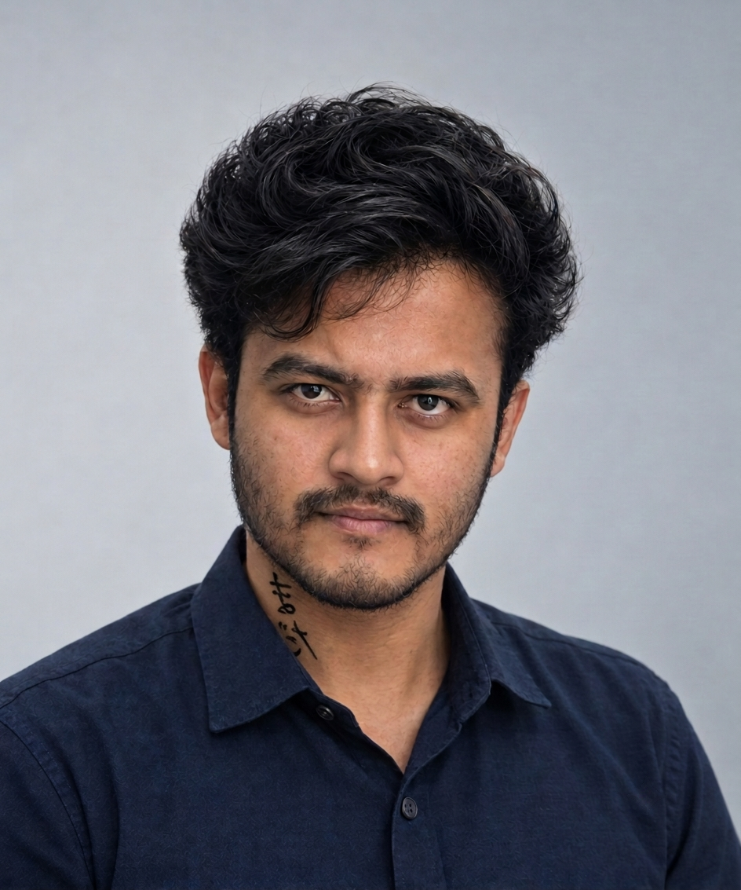

Mining Engineering. Made Smarter.
MineIQ is a Mining Engineer's Digital Assistant built to bring practical mining tools, professional resources and digital assistance together for mining engineers, mining professionals and students.
What is MineIQ?
MineIQ is a digital platform focused on the everyday needs of the mining industry. It brings mining calculators, reports and records, workforce and attendance tools, salary management, machinery and equipment records, diesel management, explosives management, safety and compliance resources, DGMS information, examination preparation, career opportunities and AI assistance into one platform.
The aim is to make useful mining-related information and tools easier to access, helping users organize their work, explore practical resources and support their professional development.
MineIQ for Mining Students
Mining students can use MineIQ to explore mining concepts, prepare for examinations, access useful learning resources and discover career opportunities in the mining sector. The platform is designed to bring learning and practical mining resources closer together.
MineIQ for Mining Professionals
Mining professionals can explore tools for calculations, reports, records, workforce activities, equipment information and other everyday mining tasks. MineIQ aims to support a more organized and connected approach to digital mining work.
Our Vision
Our vision is to help build a smarter digital ecosystem for mining by making useful technology, information and practical tools more accessible to engineers, professionals, students and organizations.
We believe digital tools can support more connected, organized and informed mining operations while helping people continue to learn and develop their skills.
Meet the Founder of MineIQ

Madhan B Sathya Shankar Gowda
Founder of MineIQ
Madhan B Sathya Shankar Gowda founded MineIQ with a vision to bring useful digital tools and practical resources closer to mining students, engineers and professionals.
MineIQ is being developed as a Mining Engineer's Digital Assistant, bringing together mining-focused tools, engineering resources and digital solutions in one platform.
His goal is to make practical mining resources more accessible and help the mining community explore useful digital tools.
Connect on LinkedInExplore MineIQ
Discover the platform and download MineIQ for your mining engineering journey.
Explore Features Google Play Indus Appstore